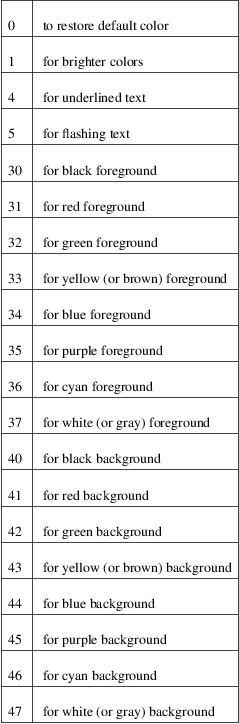
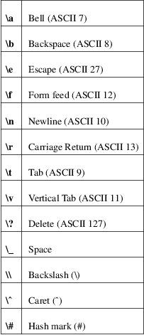

terminal-colors.d − configure output colorization for various utilities
/etc/terminal−colors.d/[[name][@term].][type]
Files in this directory determine the default behavior for utilities when coloring output.
The name is a utility name. The name is optional and when none is specified then the file is used for all unspecified utilities.
The term is a terminal identifier (the TERM environment variable). The terminal identifier is optional and when none is specified then the file is used for all unspecified terminals.
The type is a file type. Supported file types are:
disable
Turns off output colorization for all compatible utilities.
enable
Turns on output colorization; any matching disable files are ignored.
scheme
Specifies colors used for output. The file format may be specific to the utility, the default format is described below.
If there are more files that match for a utility, then the file with the more specific filename wins. For example, the filename "@xterm.scheme" has less priority than "dmesg@xterm.scheme". The lowest priority are those files without a utility name and terminal identifier (e.g., "disable").
The user−specific $XDG_CONFIG_HOME/terminal−colors.d or $HOME/.config/terminal−colors.d overrides the global setting.
The following statement is recognized:
name color−sequence
The name is a logical name of color sequence (for example "error"). The names are specific to the utilities. For more details always see the COLORS section in the man page for the utility.
The color−sequence is a color name, ASCII color sequences or escape sequences.
Color
names
black, blink, blue, bold, brown, cyan, darkgray, gray,
green, halfbright, lightblue, lightcyan, lightgray,
lightgreen, lightmagenta, lightred, magenta, red, reset,
reverse, and yellow.
ANSI color
sequences
The color sequences are composed of sequences of numbers
separated by semicolons. The most common codes are:

Escape
sequences
To specify control or blank characters in the color
sequences, C−style \−escaped notation can be
used:

Please note that escapes are necessary to enter a space, backslash, caret, or any control character anywhere in the string, as well as a hash mark as the first character.
For example, to use a red background for alert messages in the output of dmesg(1), use:
echo 'alert 37;41' >> /etc/terminal−colors.d/dmesg.scheme
Comments
Lines where the first non−blank character is a #
(hash) are ignored. Any other use of the hash character is
not interpreted as introducing a comment.
TERMINAL_COLORS_DEBUG=all
enables debug output.
$XDG_CONFIG_HOME/terminal−colors.d
$HOME/.config/terminal−colors.d
/etc/terminal−colors.d
Disable colors for all compatible utilities:
touch /etc/terminal−colors.d/disable
Disable colors for all compatible utils on a vt100 terminal:
touch /etc/terminal−colors.d/@vt100.disable
Disable colors for all compatible utils except dmesg(1):
touch /etc/terminal−colors.d/disable
touch /etc/terminal−colors.d/dmesg.enable
The terminal−colors.d functionality is currently supported by all util−linux utilities which provides colorized output. For more details always see the COLORS section in the man page for the utility.
For bug reports, use the issue tracker at <https://github.com/util−linux/util−linux/issues>.
terminal−colors.d is part of the util−linux package which can be downloaded from Linux Kernel Archive <https://www.kernel.org/pub/linux/utils/util−linux/>.